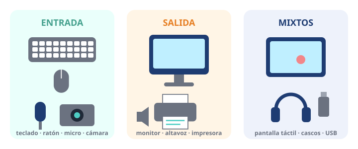

Módulo 3: Periféricos: entrada, salida y mixtos
Los aparatos que conectas al ordenador para comunicarte con él.
Informática básica · Módulo 3 de 12
¿Qué es un periférico?
Un periférico es cualquier aparato que se conecta al ordenador para meter información, sacarla o las dos cosas. Se clasifican según hacia dónde viajan los datos.

Entrada: los datos entran al ordenador. Salida: salen hacia ti. Mixtos: en los dos sentidos.
⬅️
EntradaTeclado, ratón, micrófono, cámara web, escáner, lector de huellas, mando de juego.➡️
SalidaMonitor, altavoces, impresora, proyector.↔️
Mixtos (entrada/salida)Pantalla táctil, cascos con micrófono, memoria USB, impresora multifunción.¿Cómo se conectan?
| Conexión | Para qué se usa |
|---|---|
| USB (tipo A y tipo C) | Ratón, teclado, memorias, móvil, carga… El USB-C es reversible. |
| HDMI / DisplayPort | Monitores, televisores y proyectores. |
| Jack de 3,5 mm | Auriculares y altavoces con cable. |
| Bluetooth | Sin cables: auriculares, ratones, teclados, altavoces. |
🧩 Ejercicio: clasifica los periféricos
⌨️ Teclado
🖨️ Impresora (solo imprime)
📱 Pantalla táctil
🎤 Micrófono
🔊 Altavoces
🎧 Cascos con micrófono
📷 Cámara web
📽️ Proyector
🧩 Una memoria USB, ¿qué tipo de periférico es?
Resumen: entrada (los datos entran), salida (salen hacia ti) y mixtos (en ambos sentidos).